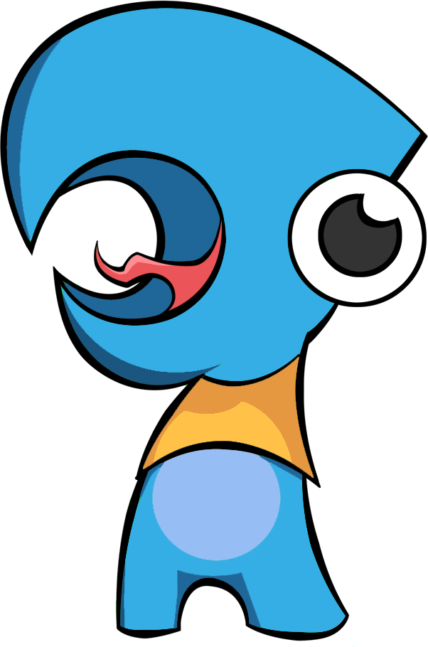
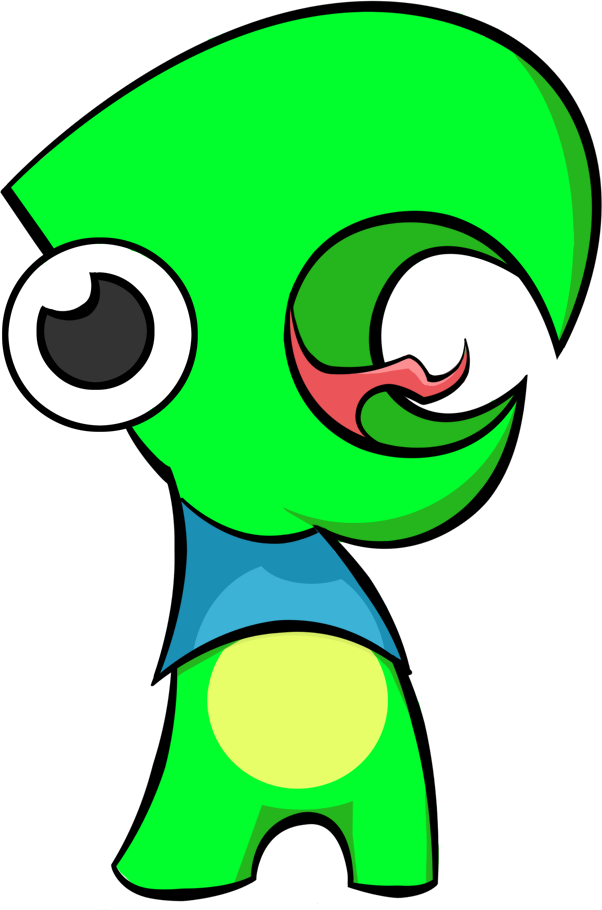

About
One of the most important elements in life is your social connections. These connections help us get through school, find jobs, make sales, start businesses, and have an overall effect on our happiness.
People with stronger social networks have a fifty percent higher survival rate than people who don't have strong social networks. And that is equivalent to the drawbacks of being an alcoholic, a heavy smoker or obese.
-Kate Dailey


Social networks such as Facebook, Google+, and LinkedIn have grown in popularity as ways to stay connected but with so many of these social networks out there it has become even easier to forget to touch base with your connections and risk losing them all together.
FeedYour.Net is here to solve that very issue.
FeedYour.Net allows you to build a contact list of people that you want to keep in touch with. It will then connect to your various social networks and scan for the last time you made a connection with this person. If you haven't connected in a while it will remind you that now would be a good time to reconnect.
Reconnecting can be an awkward process, and so FeedYour.Net has you covered there as well. When you view this contact, you can easily see some life events that can quickly provide you with some with some key talking points. So don't risk losing that sale, job, or professional connection. Use FeedYour.Net today to keep these connections alive.